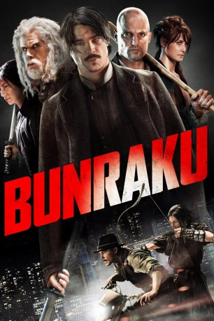
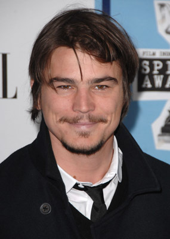
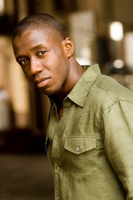
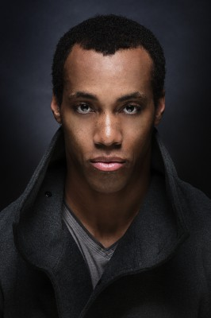
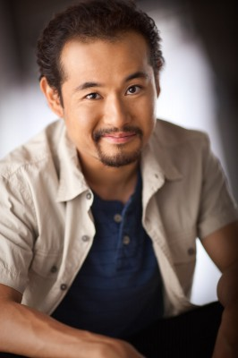

#8135 Bunraku
 
 IMDB-Wertung: 6.2 / 10
IMDB-Wertung: 6.2 / 10  Metascore: 0
Metascore: 0 
In einer Welt, in der es keine Feuerwaffen gibt, ist derjenige an der Macht, der der Stärkere ist. Gangsterboss Nikola regiert das Land mit der Armee der Roten, angeführt von Killer Nr. 2. Ein mysteriöser Fremder und der Samuraikämpfer Yoshi müssen sich zusammen-schließen, um den mächtigen Tyrannen zu stürzen. Vom Barkeeper des Horseless Horsemen bekommen sie Unterstützung und stellen sich der bermacht der Roten...
Jahr: 2010
Dauer: 119 Minuten
FSK: 16
Land: USA Studio: Indie DirectTonspuren: DTS - ,
Untertitel: Deutsch,
Auflösung: 1080p (1920x816) Größe: 7383 MB
Genre: Action, Thriller, Drama, Fantasy
Regisseur: Guy Moshe
Drehbuch: Boaz Davidson
Soundtrack: Terence Blanchard
Darsteller:
-  Josh Hartnett als The Drifter
- Gackt als Yoshi
 Woody Harrelson als The Bartender
Woody Harrelson als The Bartender Ron Perlman als Nicola
Ron Perlman als Nicola Kevin McKidd als Killer No. 2
Kevin McKidd als Killer No. 2 Demi Moore als Alexandra
Demi Moore als Alexandra Jordi Mollà als Valentine
Jordi Mollà als Valentine- Mike Patton als The Narrator
- Shahar Sorek als Killer No. 3 / Mirror Drifter
 Fernando Chien als Killer No. 4
Fernando Chien als Killer No. 4- Yoshio Iizuka als Killer No.5
-  Kofi Yiadom als Killer No. 6
-  Aaron Toney als Killer No. 7
- Holland Diaz als Killer No. 9
- Florian Ciprian als Killer No. 10
- Chris Brewster als Punk Leader
- Neil D'Monte als The Pianist
 Mark Ivanir als Eddie
Mark Ivanir als Eddie Gabriel Spahiu als Boris Patz
Gabriel Spahiu als Boris Patz Larnell Stovall als Red Army Commander
Larnell Stovall als Red Army Commander- Andreea Paduraru als Female Assistant
- Neculai Predica als Casino Employee
- Marcel Iures als Chief of Police
- Samuel Vauramo als Bully 1
 Emil Hostina als Follower #1
Emil Hostina als Follower #1 Thayr Harris als League Member
Thayr Harris als League Member-  Kasey Ryne Mazak als Host
- Dominic Geraghty als The Investigator (uncredited)
- Irina Saulescu als Alexandra's Mistress (uncredited)
- Shun Sugata als Uncle
- Emily Kaiho als Momoko
- Razvan Gheorghiu als Killer No. 8
- Andrei Aradits als Croupier
- Alin Panc als Card Dealer
- Gabi Rauta als Nicola's Assistant Casino
- Vali Rupita als Gregor
- Maria-Antoaneta Tudor als Brass Knuckle Girl
- Wong Di Jr. als Host
- George Ivascu als Cab Driver
- Linca Manolache als Prostitute
- Ciprian Dumitrascu als Bouncer 1
- Doru Firica als Bouncer 2
- Bogdan Uritescu als Mob Office Supervisor
- Constantin Barbulescu als Absin the Den Owner
- Luminita Stoianovici als Absinthe Den Waitress
- Cezara Dafinescu als Lady
- Dorin Zaharia als Ivan
- Theodor Danetti als General
- Oliver Toderita als Lowlife #1
- Zoltan Butuc als Lowlife #2
Datei: X:\2010(A-F)\Bunraku (2010, FSK16, 1920x816).mkv seit 31.01.2018
Festplatte: HD 2009(G-Z)-2010(A-F)
 Es gibt insgesamt 95 Filme in der Gruppe '2010(A-F)'
Es gibt insgesamt 95 Filme in der Gruppe '2010(A-F)'